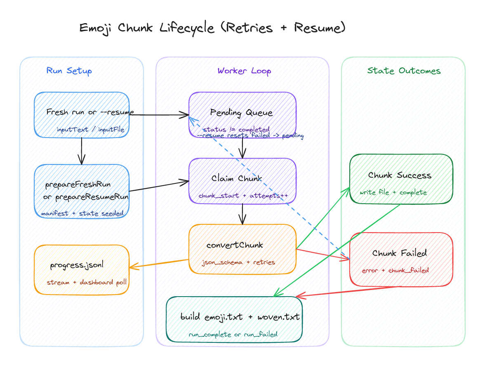

An Emoji Translator
04/03/2026
A system that converts text into emoji-only lines.

📝 / 📖
Who remembers Emoji Dick? One of those seminal (to me) pieces of conceptual writing. It stages translation as reduction, collaboration, expense, labour critique, joke, unreadability, and playful but epic artifact all at once. An LLM makes it newly possibly to generate adjacent objects on demand, but the old questions do not disappear: what is this resulting text, what is this readability or lack thereof, what counts as a version, an edition, an iteration, an addition, fan fiction, and what exactly is being translated when language is forced into pictographs? Is it useful in any way?
This post is partly technical and partly speculative. I want to show the machinery because the machinery obviously determines the kind of texts that can be generated. But I also want to see: can emoji do any real poetic work, or do they only cast a bright but impoverished gloss over the line? Some of these lines can be quite fun, cute, compelling, and some are not.
What began as a small CLI experiment gradually became an apparatus for testing that question at scale: resumable runs, chunk-level retries, explicit artifact contracts, and a dashboard that makes the duration and fragility of the process visible.
Reading the lines
I needed to know whether the system could produce stable final artifacts (emoji.txt and woven.txt) that could actually be inspected afterward. I wanted to see if the system could keep faith with the line: survive interruption, show its progress during long calls etc.

Woven lines
The woven version is more legible (to me), and it also lets me think about these lines as couplets in a way, which I also like. The effect is simple ostranie. There is also a emoji.txt file which is just the raw emoji output. My eyes drift between the words and lines I know and the emoticons of the ones I don't. I think I could give the LLM more freedom to play with its own notions of translation, but for now I wanted a fairly faithful adherence to the source text/typographical layout; the line.
The apparatus

State writes are serialized even while chunk conversion is parallelized. That keeps state.json, run.manifest.json, and progress.jsonl in agreement, which means a run can be resumed without turning into an archaeological problem, or wasting tokens/money on a failed run.
How resumption is made possible

A chunk moves through a narrow sequence: claimed, attempted, written, marked. Retries remain local to that chunk. Failed work can be sent back to pending. Completed work is not touched again.
The contract the CLI has to keep
BASH
bun run --cwd packages/emoji src/cli.ts run -- --inputFile ./book.txt --parallelism 4 --reasoning high --maxOutputTokens 64000 --requestTimeoutMs 900000 --maxRetries 8 --retryBaseDelayMs 1500 --json trueThe provider adapter asks for a strict json_schema response with exactly one emoji line for each source line. That does not solve the problem of interpretation, but it does keep the experiment honest. Line-locking, overlap-aware stitching, and deterministic weaving are what prevent the output from dissolving into decorative drift.

Whitman is useful because the passage wants breadth, catalogue, continuation. If the system can remain lineate under these conditions, it's a decent sign that something is working.
Rilke introduces a different difficulty. The line does not simply continue; it broods, turns, and qualifies itself. The output below is still awkward, but the awkwardness is at least inspectable. Certain motifs still recur with the emojies, so that's a good sign too I think.

Christian Bök's Eunoia makes the limit clearer though. Its constraint is not merely lexical or imagistic; it is internal, formal, infrastructural at the level of the vowel. Even with extra prompting, the system does not really understand that pressure. After telling it the constraint, it mostly notices the surface fact of the letter i and repeats the obvious emblem:


Biases
There are lots of biases in this project; I chose some pretty safe poems to test with. And the LLM reveals its own biases too. I'm also not sure what a truly political text would look like, or how the LLM would internally censor itself, flatten the text, etc. as it rewrote what it's given. Or at least not without external prompting explaining the text, contextualizing it etc. so that it can at least try to preserve some semblance of its originary effect. (Essentially I guess like via poetics one can detect the harness of and adumbrate parts of the LLM's poetic process in some ways.)
Conclusion
If entire texts can be rendered this way -- at ease -- what sort of texts result? What's the point? Can emoji be literary? Can there be an emoji literature? Is such a thing sculptural, pictorial, mnemonic, poetic, comic? The uncertainty is certainly part of the appeal. You could turn this into a chrome extension, a camera filter, something else. Thanks for reading!